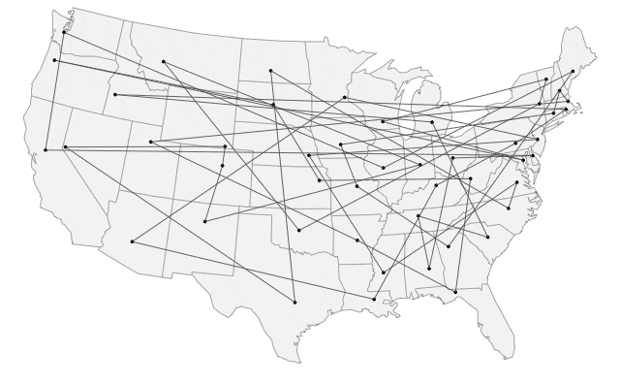

The Traveling Salesman Problem (TSP) is an NP-complete problem concerned with finding the optimal path to visit all cities in a set while using the shortest distance.
In this example, the salesman must visit all cities (A, B, C,...) and return to the starting city (A). The goal is to find the shortest possible route that visits each city exactly once.
Since the problem is NP-complete, it has not been proven whether or not a polynomial-time optimal solution exists. However, this approximation algorithm uses assumptions of geometrical shapes and that there is a path between each city to guarantee a solution no more than 1.5 times longer than the optimal solution.
The Christofides algorithm starts by creating a graph with the cities represented as vertices and the distances between them as edges. The algorithm then follows these steps:
In my implementation, by creating a minimum spanning tree with a root node (like the image shown below), steps 2-5 can be condensed into one step. All that needs to be done is simply perform a depth-first search on the tree, recording the order in which each vertex is visited.